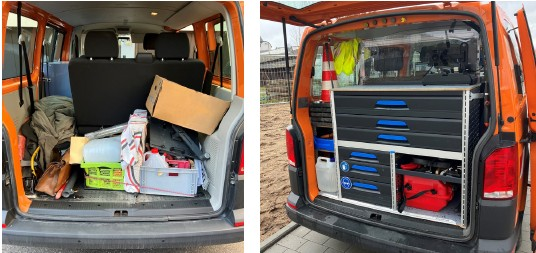

Bei Fahrzeugen, die vom Arbeitgeber zur Verfügung gestellt werden, handelt es sich um Arbeitsmittel, die unter den Anwendungsbereich der Betriebssicherheitsverordnung fallen.
Fahrzeuge müssen vor der Verwendung von den Fahrzeugführenden durch Inaugenscheinnahme und erforderlichenfalls durch eine Funktionskontrolle auf offensichtliche Mängel kontrolliert werden. Zudem sollten Schutz- und Sicherheitseinrichtungen einer regelmäßigen Funktionskontrolle unterzogen werden. Der Arbeitgeber hat Beschäftigte so zu unterweisen, dass sie in der Lage sind, mögliche Mängel bei Kontrollen vor und während der Arbeit zu erkennen. Fahrzeuge mit sicherheitsrelevanten Mängeln dürfen nicht verwendet werden. Wenn möglich, sollten Mängel durch den Fahrzeugführer bzw. die Fahrzeugführerin behoben werden. Wenn dies nicht möglich ist, müssen die Mängel dem bzw. der zuständigen Vorgesetzten und bei einem Wechsel der übernehmenden Person mitgeteilt werden. Informationen zur Kontrolle von Fahrzeugen vor Beginn einer Arbeitsschicht sowie eine Muster-Prüfliste finden sich im DGUV Grundsatz 314-002 "Kontrolle von Fahrzeugen durch Fahrpersonal".
Gemäß § 57 der DGUV Vorschrift 70 bzw. 71 "Fahrzeuge" sind Fahrzeuge zudem einmal jährlich durch eine sachkundige Person auf ihren betriebssicheren Zustand zu prüfen. Dies kann z. B. im Rahmen der Hauptuntersuchung oder eines Service-Termins geschehen.
Messtransporter und Messfahrzeuge verfügen außerdem häufig über Spannungswandler, die auf Grundlage einer Gefährdungsbeurteilung in regelmäßigen Abständen zu prüfen sind. Auch ein eventuell vorhandener Fehlerstromschutzschalter (FI-Schalter) ist regelmäßig, z. B. monatlich, durch die Leiterin oder den Leiter des Vermessungsteams bzw. den Fahrer oder die Fahrerin, zu kontrollieren.
Mangelhaft gesicherte oder ungünstig verteilte Ladung kann das Fahrverhalten eines Fahrzeugs verschlechtern und damit Unfälle begünstigen sowie zu schweren Verletzungen der Fahrzeuginsassen und Verkehrsteilnehmenden führen.
Für Fahrzeuge und Anhänger stehen viele Hilfsmittel zur Ladungssicherung zur Verfügung:

Abb. 8
Mangelhafte (links) und optimierte (rechts) Ladungssicherung
Fahrzeugführende sollten die Ladung aktiv sichern, indem sie Zurrgurte an entsprechenden Punkten oder Schienen anbringen. Die richtige Ladungssicherung wird am besten am konkreten Objekt geübt. Dazu werden von verschiedenen Unfallversicherungsträgern und dem Deutschen Verkehrssicherheitsrat (DVR) Schulungsprogramme angeboten.
Für Signalisierungsmaßnahmen werden häufig Sprühdosen und Gasflaschen im Fahrzeug mitgenommen. Neben der üblichen Ladungssicherung mittels Zurrgurten erfordert der Transport von Gasflaschen und anderen Behältnissen mit entzündbaren, explosiven oder anderen Gefahrstoffen besondere Vorsichtsmaßnahmen.
Sprühdosen sollten nur mit Kappe transportiert und vor Wärme geschützt werden. Die Erwärmung einer Sprühdose über 50 °C kann zum Zerbersten führen.
Gasflaschen dürfen nur mit geschlossen Ventilen und Schutzkappen oder umlaufendem Kragen transportiert werden. Dies gilt auch für leere Gasflaschen. Zudem muss für eine ausreichende Belüftung des Laderaumes beim Transport schwerer Gase bzw. Entlüftung bei leichten Gasen gesorgt werden. Die Querschnitte der Be- und Entlüftungsöffnungen müssen dabei jeweils mindestens 100 cm2 betragen.
Da bei einem abgestellten Fahrzeug eine Belüftung oder Entlüftung meist nicht gegeben ist, sollten Gasflaschen erst unmittelbar vor Fahrtantritt in das Fahrzeug geladen und nach Beendigung der Fahrt umgehend ausgeladen werden.
| Hinweis |
| Der Transport von Gefahrgütern auf der Straße unterliegt den gesetzlichen Regelungen des "Europäischen Übereinkommens über die internationale Beförderung gefährlicher Güter auf der Straße" (ADR). Bei geringen Gefahrgutmengen kann der Transport von einigen der ADR-Vorschriften befreit werden (z. B. Vorliegen einer ADR-Bescheinigung, Vorhandensein einer orangefarbenen Warntafel bzw. eines Großzettels/Placards). Mit der so genannten 1000-Punkte-Regel kann ermittelt werden, ob ein Ausnahmefall vorliegt (siehe DGUV Information 213-012 "Gefahrgutbeförderung in PKW und Kleintransportern"). |
Personen, die Kraftfahrzeuge führen, sind auch für die sicherheitsrelevanten Aspekte dieser Aufgabe verantwortlich. Dazu gehört z. B. die Einhaltung des zulässigen Gesamtgewichts, die Sicherung von kleineren Gegenständen und das sichere Benutzen von Anhängern.
Gegenstände wie Dokumentenmappen oder Laptops können, z. B. bei einer Notbremsung, eine ernsthafte Gefährdung darstellen. Unbedingt vermieden werden sollte auch jede Ablenkung vom Fahren, z. B. durch Smartphones. Zur Unterstützung der Fahrzeugführenden ist überdies die Anschaffung von Fahrzeugen mit integrierten Fahrassistenzsystemen (z. B. Abstandsregeltempomat, Spurhalte-/Totwinkel-Assistent) empfehlenswert.
Jeder Person, die Verantwortung für das Führen und Beladen von Fahrzeugen trägt, ist die Teilnahme an Fahrsicherheitstrainings und Seminaren zum Thema Ladungssicherung anzuraten. Unter anderem bieten verschiedene Träger der gesetzlichen Unfallversicherung diese Trainings und Seminare an.
Rechtliche Grundlagen und weitere Informationen
|